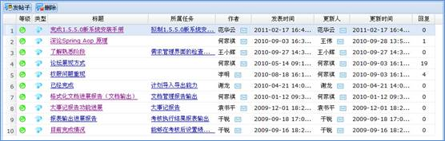

论坛主要是提供项目交流平台，论坛用户在项目论坛中发帖子、回复帖子；项目人员提交的计划任务报告与反馈也在项目论坛中展示，方便用户交流。
论坛界面如下图所示

图 论坛界面
1、发帖子
在项目列表中选择要发帖子的项目，然后在论坛列表中通过工具栏的“发帖子”按钮发帖子。
2、回复帖子
在论坛列表中选择一个帖子，单击帖子的标题链接打开回复界面回复帖子。
3、删除帖子
在论坛列表中选择一个帖子，通过工具栏的“删除”按钮删除帖子。
注意：
1、有“论坛管理员”权限的用户才能删除所有帖子。
2、普通用户只能删除自己发的帖子。
4、回复
论坛列表中的“回复”标题是该帖子有多少条回复。